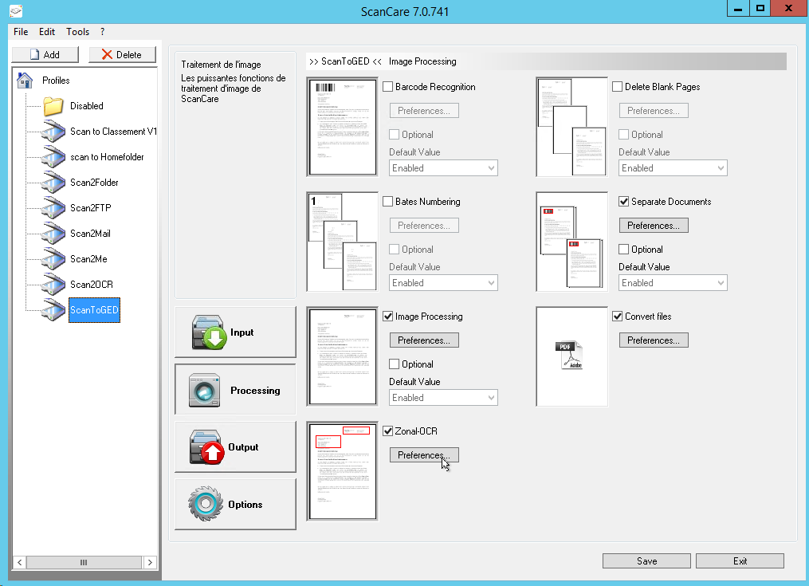
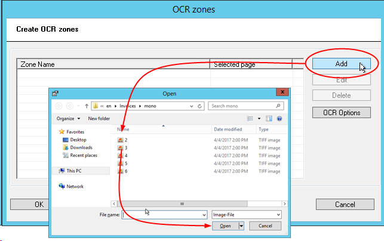
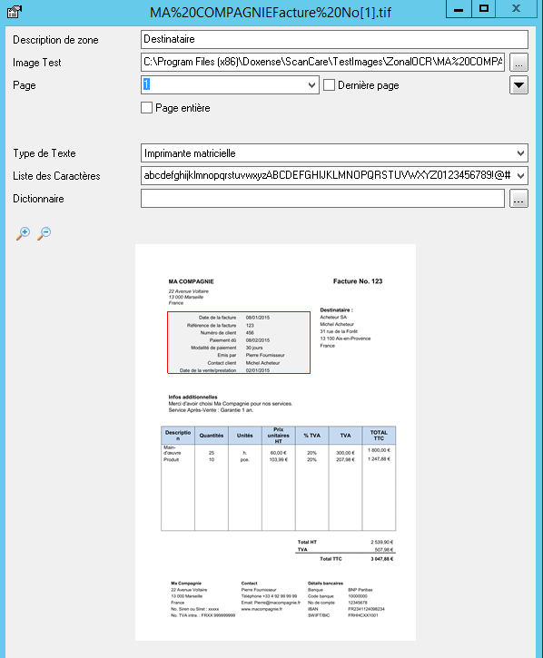
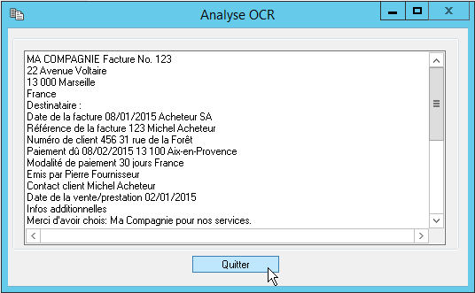

Watchdoc ScanCare - Configure Treatments - Configure the Zonal OCR
Principle
The Zonal OCR function allows you to specify the character recognition on scanned documents, including specifying the areas where you will find the text or strings to be extracted.To enable Zonal OCR, it's necessary to have the following modules : Scanner Power Tools (SPT) ;Module OCR module.
Procedure
To configure the zonal OCR:
-
start the Watchdoc ScanCare configuration program;
-
select an existing scan profile or create a new one;
-
go to the Processing section;
-
enable the function Zonal-OCR and click the Preferences button.

-
click the Add button to add a new OCR zone.
-
in the Zonal-OCR dialog box, click on Add to select the document you want to extract data from :

-
in the Open interface, choose a file you want to use to extract data from.
-
When you install Watchdoc; a dedicated reposiroty is created on : C:\Program Files (x86)\Doxense\ScanCare\Templates\Fields to store files models.
-
Using your mouse, move the selection tool to delimit the area to which you want to apply OCR processing.
-
When the area is framed in red, complete the following fields:
-
Zone description: enter the content of the delimited zone in this field;
-
Page: if the document has several pages, enter the number of the page to which the treatment should apply;
-
Last page: tick the box if the zone is on the last page of the document;
-
Whole page: tick the box if the OCR process is to be applied to the whole page.
-
To specify the nature of the data processed by OCR, click on the button
-
Type of text: in the list, specify whether the text to be analysed is normal or from a dot matrix printer;
-
Character list: from the list, select a list of characters that the area to be processed is likely to contain.
-
Dictionary: From the list of files in the C:\Program Files (x86)\Doxense\ScanCare\resources folder, select a dictionary in which Watchdoc ScanCare looks for words to compare with the words found during processing. This comparison with existing words optimises OCR processing.

-
Click on the Test button to check the zone settings:

-
Click OK to confirm the OCR zone settings.
-
Repeat the operation for all the zones of the document you wish to submit to OCR processing.